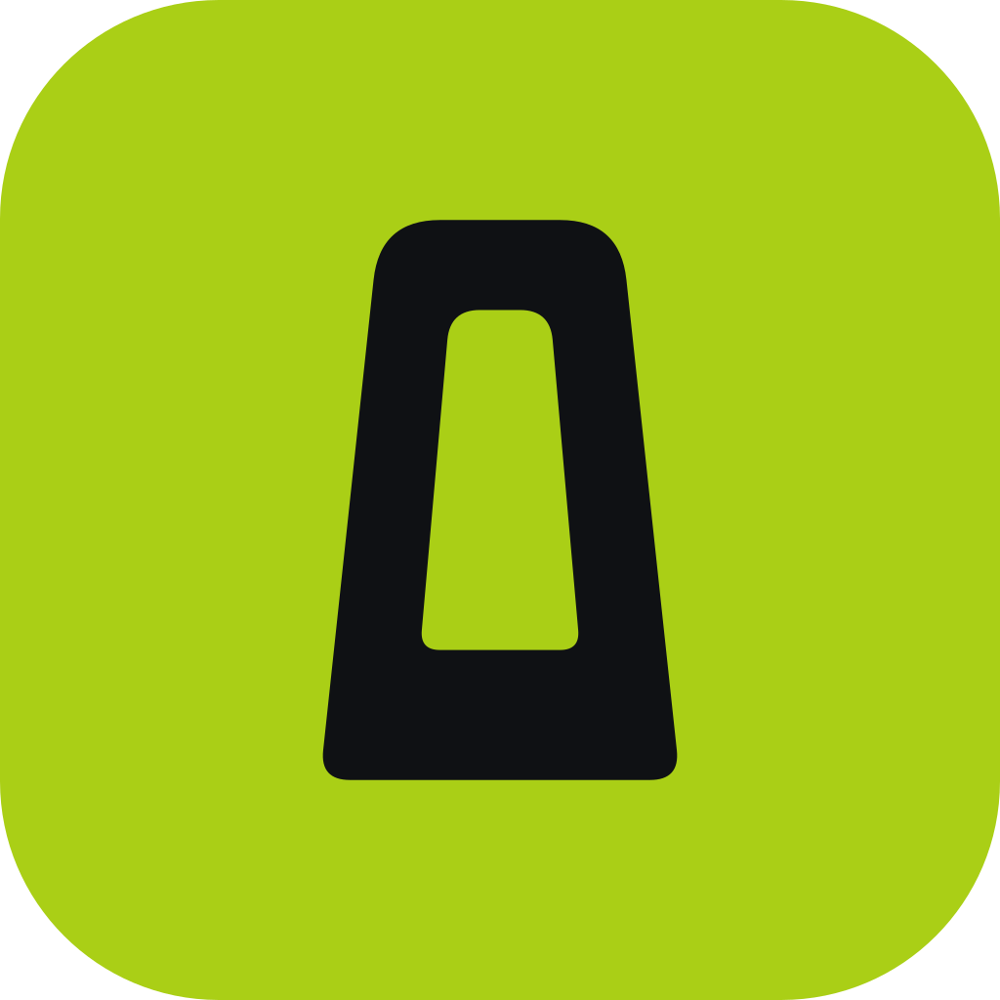
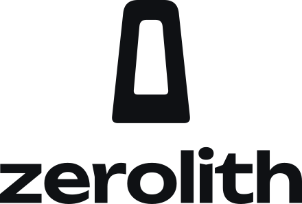
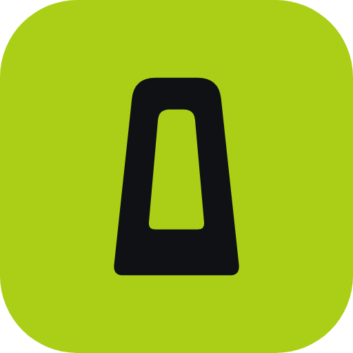
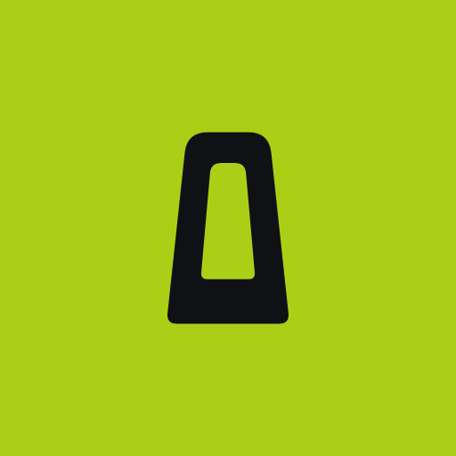
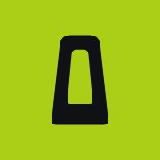
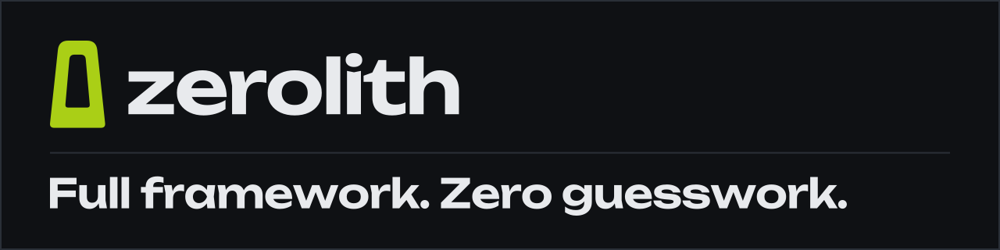
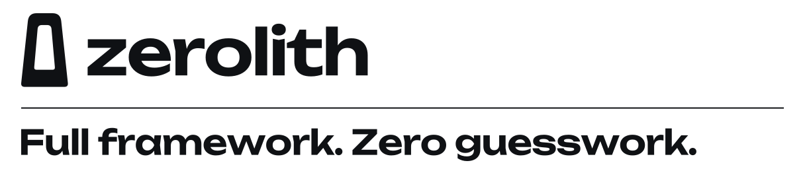
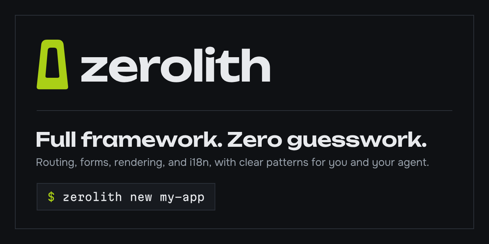

Full framework. Zero guesswork.
The zerolith brand: one mark, one palette, three typefaces, and the rules that keep GitHub, npm, the command line, dev tools, and the docs looking like the same product.
The stele
A standing stone with a zero cut through it. It is always one color, and the zero stays open so the ground shows through. A second color inside the zero leaves a seam that renders as a jagged edge, so the mark never carries one.
- Clear spaceKeep the width of the zero free on every side.
- Smallest size16 px tall. Below that, use the favicon tile instead.
- ColorChartreuse on basalt, basalt on light grounds and on chartreuse. Chalk is the quiet fallback on dark photography.
- One per viewThe stele appears once in a composition. No echoes, contours, outlines, or rock drawings around it.
Lockups
The wordmark is Unbounded at weight 600, lowercase, tracked to -0.03 em, and converted to outlines so it renders without the font. The stele stands 1.55 times the cap height, 0.31 em from the word.


App icon and favicon
A chartreuse tile with the stele in basalt. The rounded tile is for the web; the square and maskable versions are for platforms that apply their own mask.



Color
Basalt carries the page. Chartreuse is the one live wire, and it goes on five things only: the mark, the primary action, the active nav item, code keywords, and focus. On light grounds chartreuse can only be a fill; deep olive takes its text and focus roles.
| Token | Dark | Light |
|---|---|---|
--zl-bg | #0F1114 | #F5F6F8 |
--zl-surface | #171A1F | #FFFFFF |
--zl-line | #2A2F37 | #D5DAE0 |
--zl-control-line | #737C88 | #737C88 |
--zl-text | #E8EAED | #0F1114 |
--zl-text-muted | #9AA3AD | #4F5864 |
--zl-accent | #AACF16 | #AACF16, fill only |
--zl-on-accent | #0F1114 | #0F1114 |
--zl-accent-text | #AACF16 | #4B5E00 |
--zl-focus | #AACF16 | #4B5E00 |
--zl-danger | #FF7B72 | #C42B2B |
--zl-warning | #E8C547 | #7A5B00 |
--zl-hint | #7CB3FF | #1F5BB8 |
--zl-success | #E8EAED, with the check icon | #0F1114, with the check icon |
--zl-code-bg | #0F1114 | #0F1114 |
--zl-code-text | #E8EAED | #E8EAED |
--zl-code-keyword | #AACF16 | #AACF16, on the dark code ground |
--zl-code-string | #C9CED4 | #C9CED4 |
--zl-code-comment | #9AA3AD | #9AA3AD |
Type
Three families, each with one job. All three are free under the SIL Open Font License 1.1.
A signal holds a value and tells whatever reads it when the value changes. Templates bind to signals directly, so an update touches only the text that changed.
--zl-text-3xlSignals--zl-text-2xlSignals--zl-text-xlSignals--zl-text-lgSignals hold a value.--zl-text-mdSignals hold a value.--zl-text-smSignals hold a value.--zl-text-xsSignals hold a value.Interface
Square corners, 2 px rules, and no shadows, glows, or gradients. The primary action is the one solid chartreuse block on the screen.
import { html, signal } from "zerolith"; const count = signal(0); // Bind the signal itself so the text stays live. export const view = html`<p>${count} clicks</p>`;
template_frozen_read. ${count.get()} reads once when the template is created and never updates. Bind count instead.
Tip. Run zerolith doctor before you deploy a buildless app; it checks the import map and every integrity hash.
Icons
Drawn on a 24 px grid with 2 px strokes, square caps, and mitered corners, so they match the rules around them. Every file uses currentColor. The three diagnostics differ in shape as well as color.
Interface
Packages
Diagnostics
GitHub and npm
The README header ships in a dark and a light version, chosen by GitHub's theme. npm shows the light version. The social card is what a shared link unfurls into.



<picture> <source media="(prefers-color-scheme: dark)" srcset="brand/github/readme-header-dark.svg"> <img alt="zerolith: Full framework. Zero guesswork." src="brand/github/readme-header-light.svg"> </picture>
Command line
Severity uses the basic ANSI colors, so each terminal theme tunes them to its own background. Chartreuse appears only as a badge with basalt text, which reads on light and dark terminals alike. Output stays plain when NO_COLOR is set or the output is not a terminal. The sample below shows real messages with illustrative values.
$ zerolith new my-app --yes zerolith new a starter application wrote 21 files to my-app $ zerolith dev zerolith dev server v0.1.0, ready in 4 ms Local http://127.0.0.1:8080/ Root /home/ada/my-app Reload on: edits reload the page, stylesheets update in place reload src/components/home.tsx $ zerolith doctor zerolith doctor /home/ada/my-app error integrity_mismatch: /vendor/zerolith/index.js no longer matches its integrity hash fix: The file changed after the import map was written; regenerate the import map or restore the file. 1 error, 0 warnings $
| Role | Color | Used for |
|---|---|---|
| Badge | #AACF16 background, #0F1114 text | The badge that opens each command's output |
| Success | ANSI green, SGR 32 | Addresses, completed steps |
| Error | ANSI red, SGR 31 | Error findings and failed commands |
| Warning | ANSI yellow, SGR 33 | Warning findings |
| Hint | ANSI blue, SGR 34 | The fix: line under a finding |
| Muted | ANSI bright black, SGR 90 | Labels such as Local and Next:, file folders, and details |